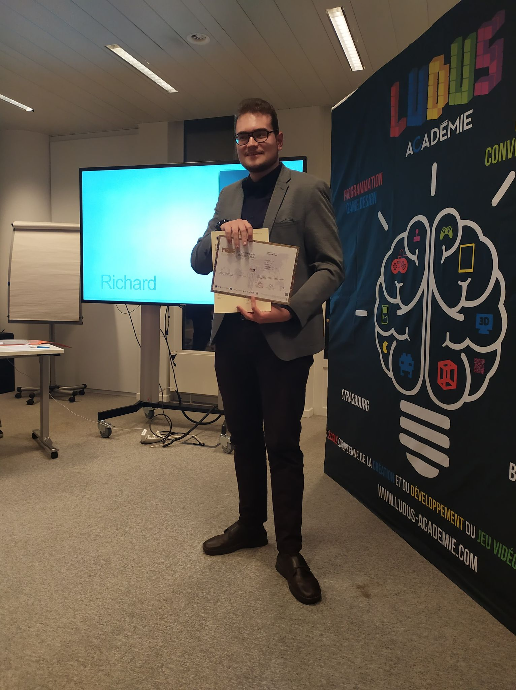

RICHARD DENYS
Game Designer
Baccalauréat en Game Design et Développeur de Jeux Vidéo
Educateur A2
- GSM: +32 498/26.84.08
- ADRESSE: Rue Massau 2, 4860 Pepinster
- EMAIL: richardn.denys@gmail.com
- NATIONALITE: Belge
- NAISSANCE: 12/09/1995
Etudes
Bachelor européen en Jeu Vidéo et Serious Game Ludus Académie, Bruxelles / 2016 à 2019
Agent d'Education Insitut du Sacré-Coeur, Nivelles / 2012 à 2014
Expériences Professionnelles
Game Designer Parlement Fédéral de Belgique, Bruxelles / Février 2019 à Juin 2019
Conception et réalisation d'une application mobile ayant pour objectif d'utiliser la visite guidée du parlement pour y jouer.
- Gestion de projet
- Game Design des mini-jeu
- Entretien et relation avec le client
- Développement du prototype sur Construct 2
Game Designer La Soxiété MintT, Bruxelles / 2016 à 2018
Création de "L’application des "BienVeilleurs"". Application mobile et tablette sensibilisant aux chutes chez les seniors.
- Gestion de projet
- Game Design des mini-jeu
- Entretien et relation avec le client
Game Designer Ludus Académie Game Jam, Bruxelles / Juin 2019
Création du jeu "JojoXDynastieWarrior ". Jeu "Beat'em all" mélangeant deux univers fictifs différents avec une équipe de 6 personnes.
- Création des mécaniques de Gameplay
- Création des différents paternes (ennemis, bonus, projectils,...)
- Création de documents de Game Design
Lead Game Designer GaCha Ubisoft (Game Jam), Montpellier / Avril 2019
Création du jeu "KokeshiRun" en équipe de 15. Runner multijoueur sur PC développé avec "Unreal Engine".
- Gestion d'équipe
- Gestion du temps et des différents postes
- Gestion des différentes contraintes
Langages
- Français: C2
- Anglais: B2